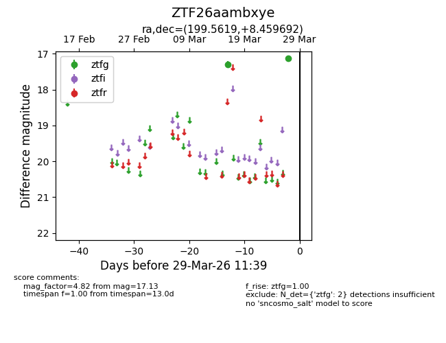
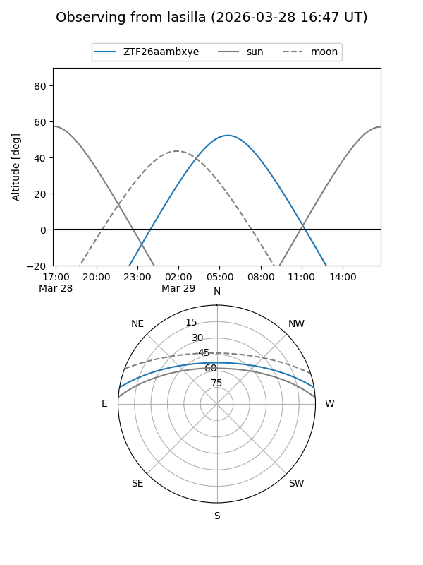
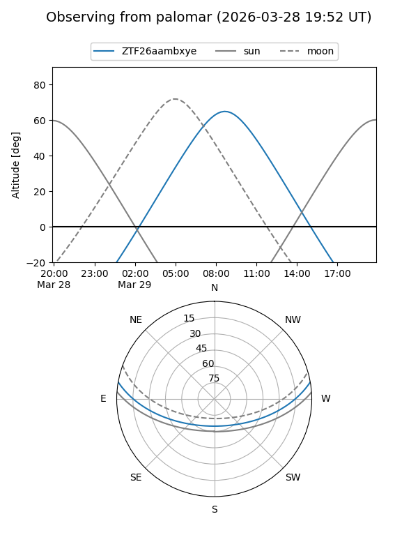

ZTF26aambxye
Target ZTF26aambxye at 2026-03-29 11:42
Aliases and brokers:
FINK: link
Lasair: link
ALeRCE: link
alt names
ZTF26aambxye (ztf,fink_ztf)
Coordinates:
equatorial (ra, dec) = 199.5619,+8.45969
equatorial (HMS+DMS) = 13:18:14.86,+08:27:34.89
galactic (l, b) = (322.9416,+70.28288)
Flags:
Photometry:
last ztfg=17.13
2 ztfg detections
Lightcurve

Visibility


Additional plots